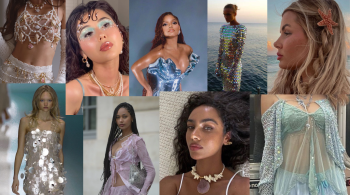
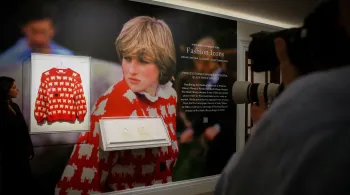
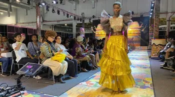
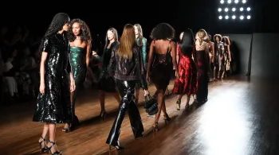
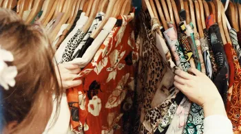

FASHION SOCIETY
SEGUNDA-FEIRA , 4 DE JUL
HOME
NOTÍCIAS
TENDÊNCIAS
MAKES

“MERMAIDCORE”: COMO ADOTAR A TENDÊNCIA QUE APOSTA NO VISUAL DAS SEREIAS?
O QUE REALMENTE É MODA PLUS SIZE? ESPECIALISTAS AVALIAM EVOLUÇÃO DO TERMO
SUÉTER DE “OVELHA NEGRA” DA PRINCESA DIANA SERÁ LEILOADO POR ATÉ R$ 384 MIL

H&M ANUNCIA LOJAS NO BRASIL; RELEMBRE A TRAJETÓRIA DE OUTRAS FAST FASHION GRINGAS NO PAÍS

SÃO PAULO RECEBE A 1ª EDIÇÃO DA ÁFRICA Fashion WEEK BRASIL

ESTILISTA CARIOCA PATRÍCIA VIEIRA MARCA PRESENÇA COM PEÇAS DE COURO NA SPFW

MARCAS DE ROUPAS MAIS PROCURADAS EM REVENDAS PODEM ESTAR NO SEU ARMÁRIO
BARBIECORE: CONFIRA COMO USAR ESTA TENDÊNCIA COM dicas DE LOOKS
MARY QUANT, ESTILISTA BRITÂNICA QUE POPULARIZOU A MINISSAIA, MORRE AOS 93 ANOS